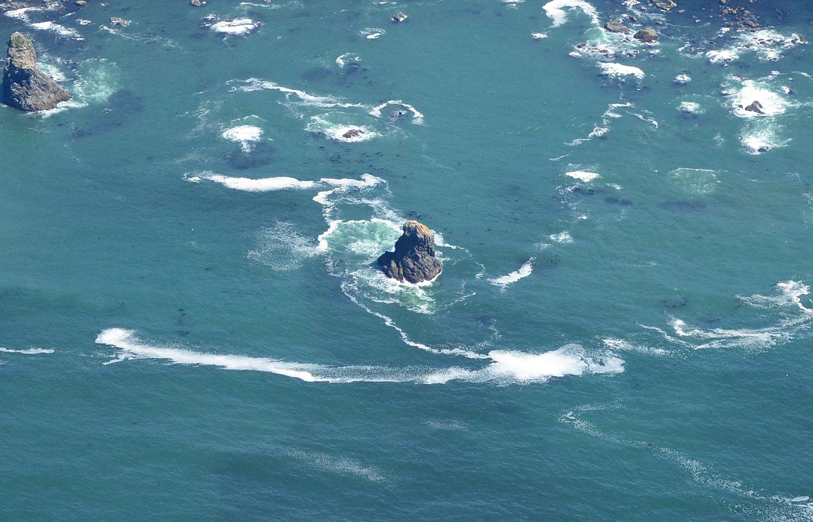
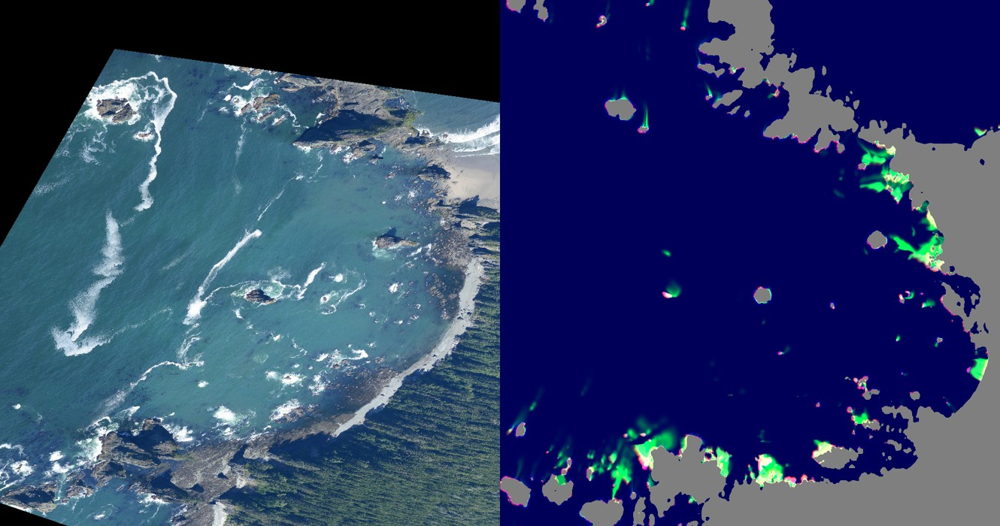
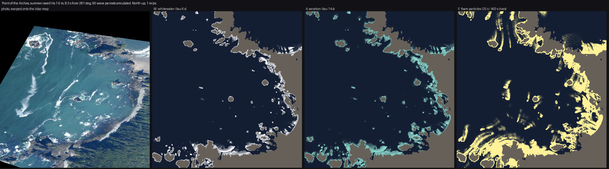

3. Breaking per crest, and the three foams
What it's for. It makes the white on the sea, in the right shapes and places, without placing a single crescent, collar or streak by hand. These are the fields the painter turns into foam in how-to 4.
Code: SeaState in code/sea/sim.py (__init__, crest_break, run), ambient_current, and modal_sim.py.
The model system: Ruskin's two foams, plus the one he couldn't see
Ruskin, Modern Painters I, §29, on the two conditions of foam "of invariable occurrence on breaking waves":
first the thick creamy curdling overlapping massy form which remains for a moment only after the fall of the wave … and secondly, the thin white coating into which this subsides, which opens into oval gaps and clefts, marbling the waves over their whole surface, and connecting the breakers on a flat shore by long dragging streams of white.
That is two materials with two lifetimes: seconds for the first, minutes for the second. From the air there's a third, which Ruskin, standing on shore, couldn't see: the jade pool of bubbles under and behind a break. It's lighter and greener than the sea but not white (measured L* 64, sd 18, around the Point of the Arches stack).

The photo at full resolution. A white rim on the weather face; a jade pool about two stack diameters across; white filaments curling round the lee; old foam drifting off in streaks.
So the sim keeps three quantities, integrated over the last 60 wave periods (~8 minutes):
| field | Ruskin | lifetime | how it moves |
|---|---|---|---|
W whitewater |
"thick creamy curdling" | τ_w = 6 s | stays where it was made |
A aeration |
(the jade pool) | τ_a = 14 s | advected on a grid |
| foam particles | "thin white coating … long dragging streams" | 25 s or 450 s | carried by the current, one by one |
Step 1. Crescents that draw themselves
The loop steps T/8 at a time. At each step, a cell that a breaking crest has just swept over (q·T < dt) is set to fresh whitewater, and everything else decays:
q, Hinst, brk = self.crest_break(t)
passed = q * T < dt # crest swept over x in this step
age = q * T
src = brk & passed
W *= np.exp(-dt / P['tau_w']); A *= np.exp(-dt / P['tau_a'])
lost = W * (1 - np.exp(-dt / P['tau_w']))
W = np.where(src, np.maximum(W, np.exp(-age / P['tau_w'])), W)
A = np.where(src, np.maximum(A, 1.0), A)
That is the whole trick. The crest moves shoreward at c = √(g d), and the whitewater it made a moment ago is still decaying behind it. So each breaking patch comes out sharp on its leading, shoreward edge and fading seaward, which is exactly the crescent in the photo. Nothing draws the crescent. Its length is the reef head's width, and its tail is c·τ_w, about 20 m in 3 m of water.

Stage 1 v4, the first render with pinnacle depth (how-to 2). The reef heads give crescent breaks, each with a sharp edge on the shore side. At this stage the foam was still an Eulerian grid (next step), which is why it is all fog and stipple.
Step 2. The collar: steep rock surges whatever the depth rule says
A wave running into a cliff doesn't break by the depth rule. It surges and bursts (Iribarren number > 3.3). Every crest passing within ~2 m of steep rock throws whitewater, weighted by how squarely it faces the rock:
gyl, gxl = np.gradient(nd.gaussian_filter(dl, 1.5)) # dl: distance to land
facing = np.clip(-(self.kx * gxl + self.ky * gyl) / nrm, 0, 1) # wave heading into the face
steep = np.clip((nd.maximum_filter(slope, 7) - 0.35) / 0.6, 0, 1)
self.collar = (np.exp(-dl / 1.8) * (0.05 + 0.95 * facing) * steep * (dl < 6)).astype(np.float32)
The steep factor came late. Without it every beach and low platform wore a white collar, and the first eye-level view from the beach was a snowfield (how-to 6). The jade pool gets its own, wider source: an exponential out to ~9 m, stronger on the faces the waves hit, and multiplied by a lumpy noise (lobes) because the photo's pools are lopsided, not rings.
Step 3. Old foam must be particles
My first persistent foam F was a grid field, advected semi-Lagrangianly every other step. After a few hundred steps it was fog. Each resample blurs a little, and a streak 2 m wide becomes 20 m wide within minutes:

notes/dbg_foam_map.png: the photo warped onto the map (left) and the Eulerian fields (right): red whitewater, green foam, blue aeration. There are no streaks anywhere, just smudges on the shore.
So decaying whitewater sheds particles. Each one is jittered inside its cell, carried by the current with a little diffusion, and killed on an exponential clock:
shed = (lost > 0.02) & ~self.land
ys, xs = np.nonzero(shed)
pr = np.clip(lost[ys, xs] * P.get('shed', 2.5), 0, 1)
keep = rng.random(ys.size) < pr
...
lt = np.where(rng.random(xs.size) < P.get('long_frac', 0.12),
rng.exponential(P['tau_f'], xs.size), # surfactant foam, minutes
rng.exponential(P.get('tau_short', 25.0), xs.size)) # most foam pops in seconds
...
px = px + uu * dt + rng.normal(0, sd, px.size); py = py + vv * dt + rng.normal(0, sd, px.size)
ok = (pa < pl) & ... & ~self.land[...]
The two lifetimes came from looking. With one lifetime of 150 s, the shores were buried and there were no long streaks. With 450 s alone, foam piled up everywhere. The photo shows most foam gone within a few metres of its break and a minority surviving for hundreds of metres. For close views the painter splats the particles again onto a 0.12–0.3 m grid over the camera's footprint (local_foam in paint.py), so a 0.1 m/px view gets its own sharp foam from the same particles.

notes/dbg_parts.png: every particle (yellow, dimmer with age) and the current (green ticks). Foam now leaves the rocks in plumes.
Step 4. A current worth drifting on
The particles need somewhere to go. ambient_current solves potential flow of a uniform drift around the land: Laplace's equation with no flow through the coast, on a 4 m grid, with a sparse solve.
rows.append(np.arange(n)); cols.append(np.arange(n)); vals.append(np.full(n, 1e-6)) # pins isolated ponds
(That line exists because the first solve returned NaN everywhere: a rock pool cut off from the sea made the matrix singular.) A drift steered round land alone gives streaks as straight as rulers, and the photo's streaks swing in S-curves. So I add a divergence-free eddy field, the curl of a smooth stream function (~0.12 m/s at 160 m scale):
psi = fbm((h, w), 160, seed + 21, octaves=2)
gyp, gxp = np.gradient(psi)
ue, ve = gyp, -gxp
Stokes drift, 3% of the wind, and a 0.2 m/s shoreward push inside breaking zones go on top.

figs.py three_foams, from the final Point of the Arches run: the photo warped onto the same map, then W, A and the particle density. The whitewater and pools sit where the photo's white and jade are: points, stacks, the south shelf. The particle plumes are right in kind but a factor of two or three too short. The photo's long streaks in open water are the main thing this sim does not make (how-to 7).
Wind: whitecaps and windrows
For the storm row the sim adds deep-water breaking. Whitecap coverage follows Monahan and O'Muircheartaigh (1980), W = 3.84×10⁻⁶ U^3.41: 1% at 10 m/s and 6% at 17 m/s. Each whitecap is a 2–8 m dash along the wind. Above 5 m/s the particles also feel a Langmuir convergence into windrows, lines along the wind about 25 m apart:
vc = -0.004 * self.U * np.sin(2 * np.pi * sperp / P.get('windrow', 25.0))
Cost
On a 1400×1300 m tile, the ray solve takes ~50–100 s, the travel-time solve ~30 s, and 60 periods of foam ~4–8 minutes at one core, with up to ~4 M particles. The laptop's load average was over 100 with the other lanes, so after the first few runs I moved each job to Modal (modal_sim.py, 2 CPU, 8 GB). It needs only numpy and scipy, which makes it easy to ship. Fields come back as float16 (~30 MB a run).